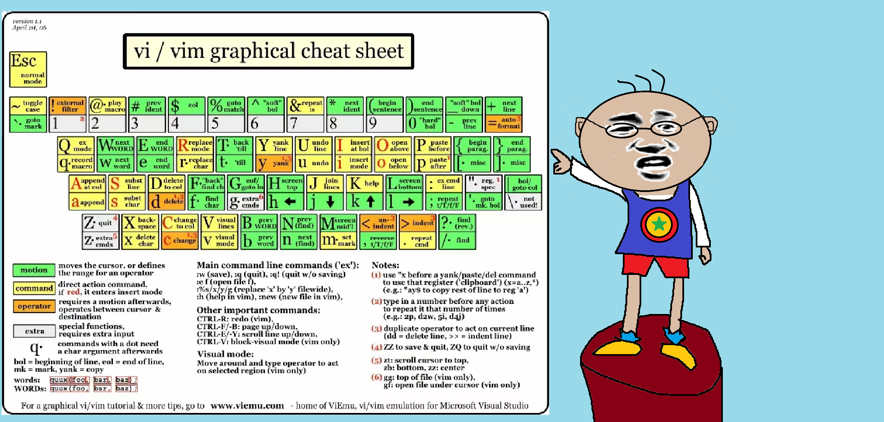

明明
大神啊大神啊，我怎么去编辑Linux里面的文件啊？
白白
在Linux中，可以使用多种文本编辑器来编辑文件，比如nano、vi、emacs等，常见的是使用vi去编辑文件内容。
如果当前目录下没有demo.txt文件，那么这条命令会创建该文件。
明明
我按照你的方式打开了，怎么是一片空白啊，我输入不了字符怎么办啊？
白白
这就要说到vi的操作模式了，vi有三种操作模式，命令模式（Command Mode）、插入模式（Insert Mode）
和末行模式（Last line Mode）。
当你一进入文件时，用的就是命令模式。但是在命令模式下，我们无法进行输入。
白白
这就要谈到我们vi编辑器的第二种模式了，插入模式（Insert Mode）
首先我们要进行模式的转换，在命令模式下输入a,i,o或者A,I,O都可以进入插入模式（Insert Mode）。
接下来就可以进行编辑了，当然了，在这个模式下enter键，backpace键，delete键等的用法是和在windows下的用法是一样的。
明明
输入a,i,o都可以进入插入模式的话，那它们有什么区别呢？
a是从光标的下一个字符的位置进行输入字符
A是在光标所在行的行尾输入字符
i是从光标当前位置输入字符
I是在光标所在行的行首输入字符
o是在光标所在行的下一行新增一行输入字符
O是在光标所在行的上一行新增一行输入字符
白白
接下来就要谈到vi的第三种模式，末行模式（Last line Mode）了。
这个模式是针对文件进行全局性操作。
只要输入’:’就可以进去末行模式（Last line Mode）。当然了，
如果你还在编辑模式，就要先输入ESC键退回命令模式，然后再输入“:”就可以进入末行模式末行模式（Last line Mode）
输入
":w"就可以将编辑的数据进行保存
":q"就可以将编辑的数据进行退出
":w!"就可以将编辑的数据进行强制保存
":q!"就可以将编辑的数据进行强制退出
所以呢
":wq"就是将编辑的数据进行保存后退出,
":wq!"就是将编辑的数据进行强制保存后退出
明明
你前面讲了vi的命令模式，怎么感觉这个模式很鸡肋呢。都没怎么用过。
白白
怎么能呢，既然它都被创造出来了，肯定会有它独特的魅力啊，而且嘞，这个vi的命令模式学会了就是事半功倍，它会大大地方便你编辑文件和查找字符的效率滴。
例如在命令模式下，我们可以用命令控制光标的上下左右移动，可以对文本里的行内容进行删除，复制和粘贴，甚至还可以进行字符串的查找，撤销操作和重复上一次的操作。
白白
那我先讲讲命令模式下，光标是怎么进行上下左右移动的吧！
♦一般情况下我们会用键盘上的←，↑，→，↓键来控制移动一个字符位置 ，但是在vi里面，
除了这个我们还有别的使用方法，就是用h,j,k,l。h代表左，l代表右，j代表下，k代表上。
♦除了这种一个字符一个字符的移动光标，我们还有更加便捷的方法。
下面这些是针对页进行移动
[Ctrl] + [f] 是向下移动一页
[Ctrl] + [b] 是向上移动一页
[Ctrl] + [d] 是向下移动半页
[Ctrl] + [u] 是向上移动半页
♦还有一个针对全局性的光标移动方法
输入G可以去到文件的最后一行
输入gg可以回到文件的第一行
而输入ngg可以去到文件的第n行
明明
哇！原来还有这么多的光标移动方法，真是让我眼前一亮啊！
你之前还提到在vi的命令模式下，还可以对文本里的内容进行删除，复制和粘贴，这些操作应该挺复杂的吧，毕竟这个vi黑框框里根本就用不了鼠标。
白白
在vi编辑器中，这个命令模式简直太方便我们编辑文件啦！
♦按x键可以向后删除一个字符，而输入nx就可以向后删除n个字符。
♦输入dd就可以剪切光标所在的一整行，而输入ndd就可以剪切光标往下的n行字符。
♦输入yy可以复制光标所在行，而输入nyy可以复制光标往下n行内容。
♦输入p就可以把刚刚剪切或复制的内容粘贴到光标的下一行，而输入P可以将内容粘贴到上一行
明明
如果我们要在linux的文件里查找字符的话是不是还挺麻烦的？
白白
不麻烦的，vi编辑器有专门的查找字符的方法
♦在命令模式下输入”/word1”并回车，就可以找到光标之下的word1字符。
而输入”?word1”并回车，就可以找到光标之上的word1字符。
这样的话每一次的查找，都只能定位一个，重复输入就很麻烦。
但是我们按下n键就可以重复上一次的查找动作，而按下N键就会反方向重复上一次的查找动作。
♦我们还可以用末行模式进行查找替换。
输入”:n ,m s/old word/new word/g“这个的意思是把从第n行到m行的old word全部替换成new word。
而old word我们还可以用正则表达式来代替。g表示全局匹配效果。
明明
哇，这个查找替换字符真的挺方便的啊，但是我要是替换错了部分字符，那我岂不是要把这些字符全部给改正回来，那得改到什么时候啊？
白白
嗯，这个问题你需要用vim的撤销操作来解决。
在命令模式下输入”u“就可以撤销上一次的操作，
这样的话，你就不用担心你改错了什么了。
这个模式还有一个小技巧，按下”.”键就可以重复执行上一次的命令。
明明
终于都讲完了，这么多的命令，是真的能让我两眼发黑的程度啊
白白
对了对了，还有一个很重要的命令没讲呢。
当我们在面临文件里无数行数据时，我们肯定会眼花缭乱，不知所措。
而vi的末行命令给了我们一个很好的解决办法
♦输入”:set nu”回车后就可以发现每一行前面都标明了行号，这样是不是就很直观了啊！
♦如果我们要去第n行，还可以直接输入”:n”后回车。
对了对了，这么多的命令你记下来肯定会有点困难，送你一张速记图
